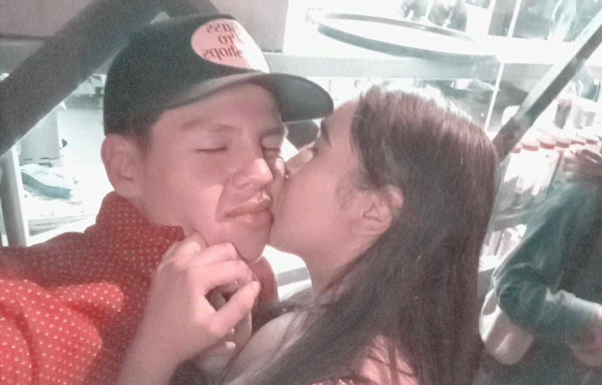
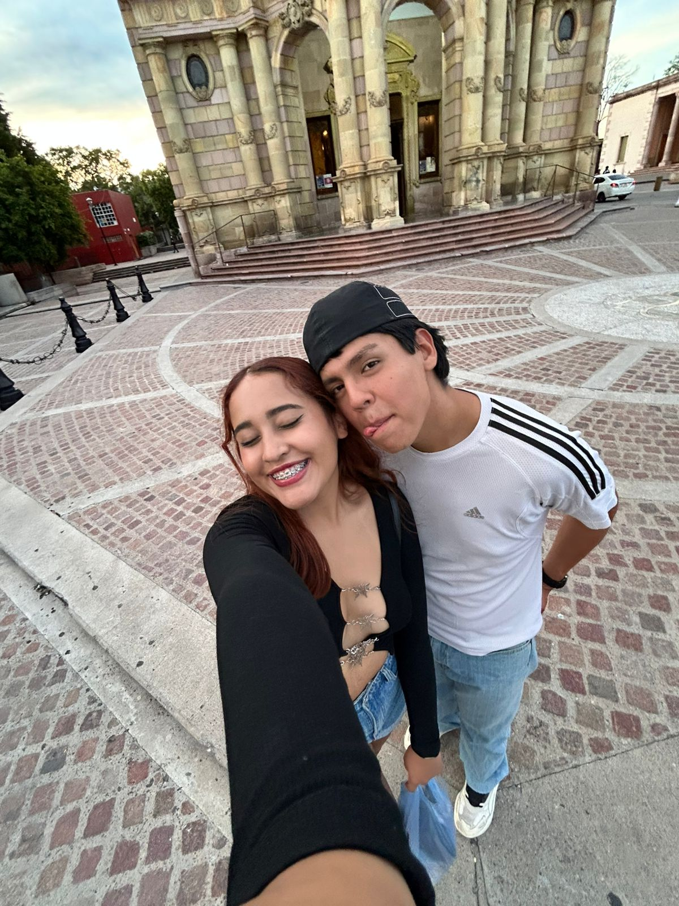
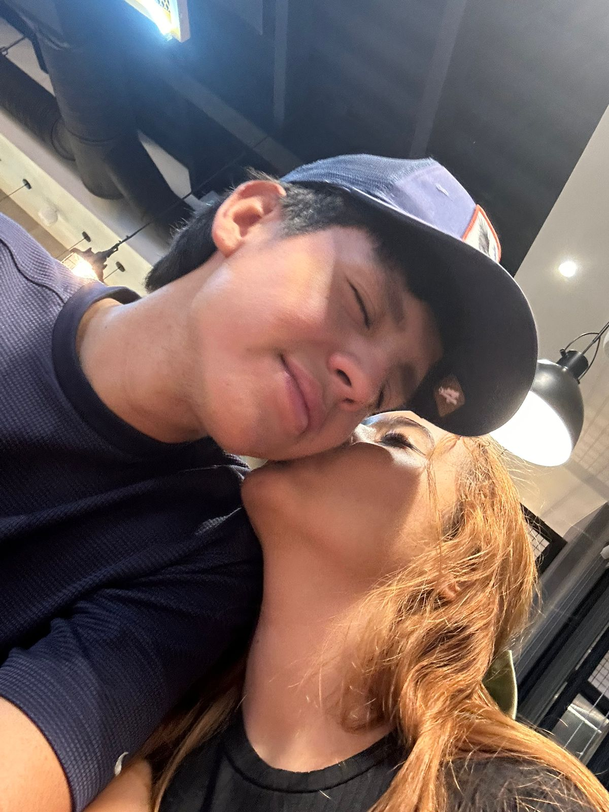
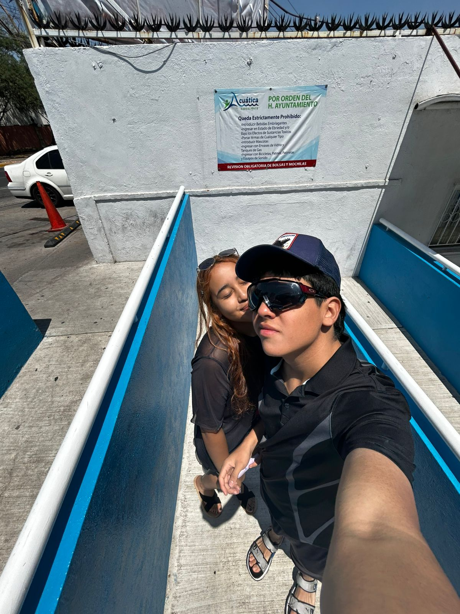
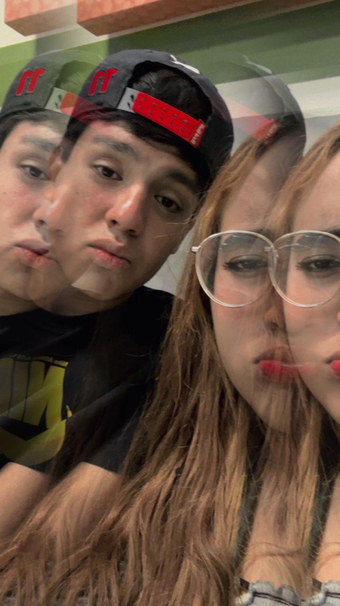
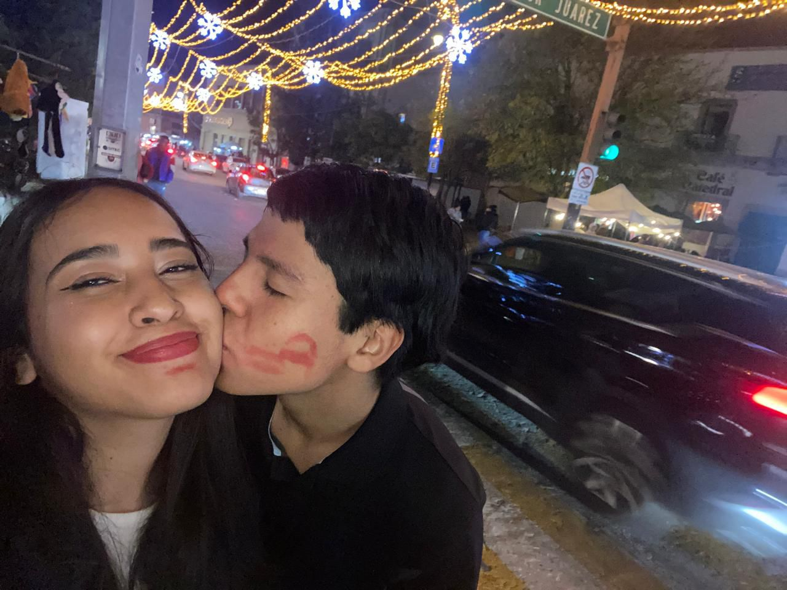

Recuerdas este día corazón?, la verdad un día tan bello
en donde pude conocerte más, tal vez tener una noción de lo que podría sentir por ti
y así darme la idea de conocerte más.

Omg mor!!, comer en Carl's junto a ti es bello sabes, aunque realmente a veces ni queremos ir
a excepción de mí, pero qué bonito es pasar días a tu lado y saber que obvio necesitamos comer jaja
e ir a lugares contigo, qué bello, por cierto, qué hermosa estás en esta foto (Y siempre)

Esta foto y ese momento contigo de verdad me pareció muy lindo, tomarnos fotos aleatorias,
hasta grabar videos platicando con nuestros futuros hijos, la verdad qué hermoso momento
te puedes imaginar cuántos pensamientos tan bonitos sentimos entre nosotros? qué hermoso!!

Morchis, cuando fuimos a Jump Jump, jaja qué padre la verdad, estás saltando y vernos desde lejos
querer atraparnos y solo estar corriendo como locos sabiendo cómo nos veíamos, aunque real estábamos muy sudados jaja
qué bonito ese día, realmente fue un día nuevo, algo nuevo entre nosotros y muy hermoso

Sí mor, esto fue después de Jump Jump, creo que olíamos algo raro, o yo más bien jaja, pero sabes que
fuimos a cenar morchis, y es lo que te digo, tan hermoso estar a tu lado en cada momento y realmente ese día nos contamos
muchas cosas tan bonitas, sin duda comunicarme contigo es tan bello

Día de balneario, creo que esta fue la primera vez amor, jaja porque recuerdo que los demás días solo el agua
estaba súper helada, pero esta primera vez fue diferente obvio, porque fue algo nuevo, algo bonito, algo que queríamos hacer
cambiar nuestras citas y vernos así morchis, en el balneario, almorzando planchitas, qué hermoso la verdad, uno de mis mejores días
junto a ti

Sí morchis, esta foto me gusta mucho, y realmente elegí con cuidado las fotos que podía poner en esta página
es muy bonito cuando nos tomamos fotos y podemos tener esa conexión que hace que nos amemos tanto

Bonito día, bonita temporada, bonito mes, bonitos nosotros, amor, qué hermoso saber que en un año podemos estar
juntos, simplemente me parece muy hermoso no lo crees?, terminamos muchos proyectos personales juntos amor, desde tu escuela, cuando sufrí en la uni, etc..
de verdad esta foto me hace sentir una química bonita, porque venos amor, somos tan felices, y lo seguiremos siendo